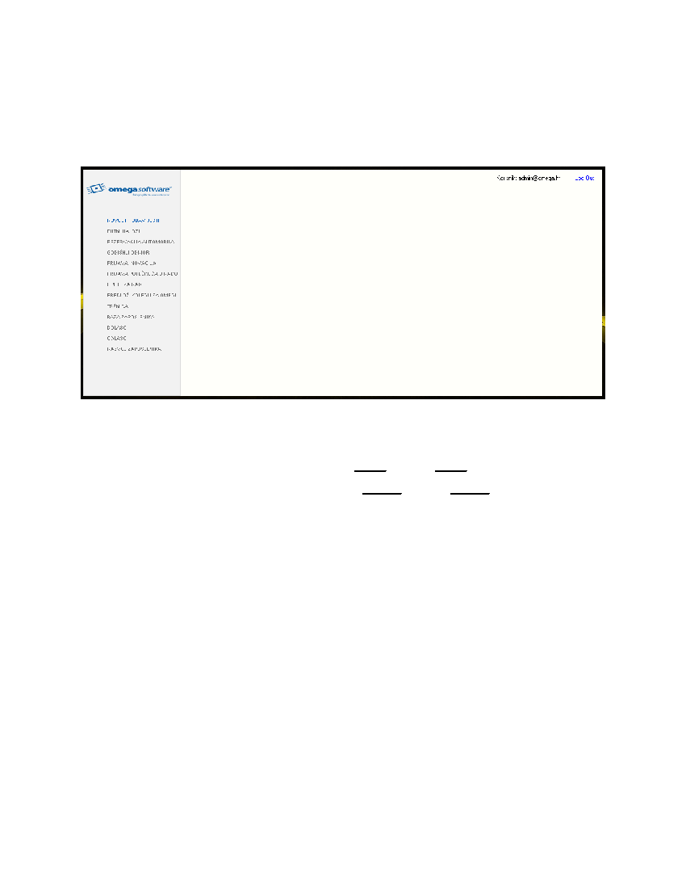

6
ko je korisnik unio podatke koje se nalaze u bazi podataka, onda mu se otvara glavni ili poèetni prozor
aplikacije (Slika 7.).
Izgled glavnog prozora ovisi o ulozi korisnika.
Slika 7. Izgled glavnog prozora
•
Kod isprobavanja aplikacije možete unijeti sljedeæe podatke
o
Za prijavu kao admin: Korisnicko ime: admin, Lozinka: admin
o
Za prijavu kao korisnik: Korisnicko ime: korisnik, Lozinka: korisnik
4.0.
BAZA ZAPOSLENIKA
Jedino korisnici koji u bazi podataka imaju ulogu admina mogu pristupiti opciji „Baza zaposlenika“ U toj
opciji se nalazi sve što je potrebno administratoru za rad s korisnicima koji su registrirani u aplikaciji i oni
koji æe tek biti registrirani U opciji „Baza zaposlenika“ korisnik može vidjeti sve korisnike koji su
registrirani, može dodati nove korisnike, može obrisati korisike te može izmjeniti unaprijed krive napisane
korisnike.